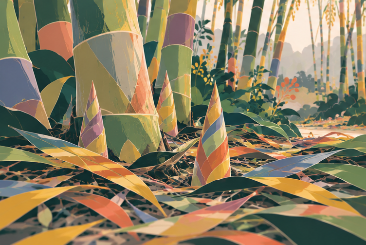

404 · Uncharted terrain
This trail
ends here.
The page you are looking for has slipped back into the forest.
Return home
404 · Uncharted terrain
The page you are looking for has slipped back into the forest.
Return home